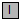

Modelica.Blocks.Types.InitPID.Temp
Modelica.Blocks.Types.InitPID.Temp
This initialization type is identical to Types.Init and has just one additional option DoNotUse_InitialIntegratorState. This options is only introduced in order that the default initialization for the Continuous.PID and Continuous.LimPID blocks are backward compatible. In Modelica 2.2, the integrators have been initialized with their given states wheresas the D-part has not been initialized. The option "DoNotUse_InitialIntegratorState" leads to this initialization definition.
| Name | Description |
|---|---|
| NoInit=1 | no initialization (start values are used as guess values with fixed=false) |
| SteadyState=2 | steady state initialization (derivatives of states are zero) |
| InitialState=3 | initialization with initial states |
| InitialOutput=4 | initialization with initial outputs (and steady state of the states if possibles) |
| DoNotUse_InitialIntegratorState=5 | don't use, only for backward compatibility (initialize only integrator state) |
|  Temp | Temporary type of initialization with choices for menus (until enumerations are available) |
Modelica.Blocks.Types.InitPID.Temp
| Name | Description |
|---|---|
| min | |
| max |